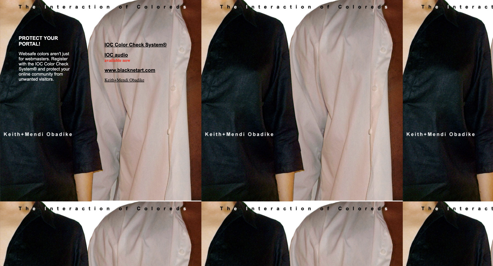
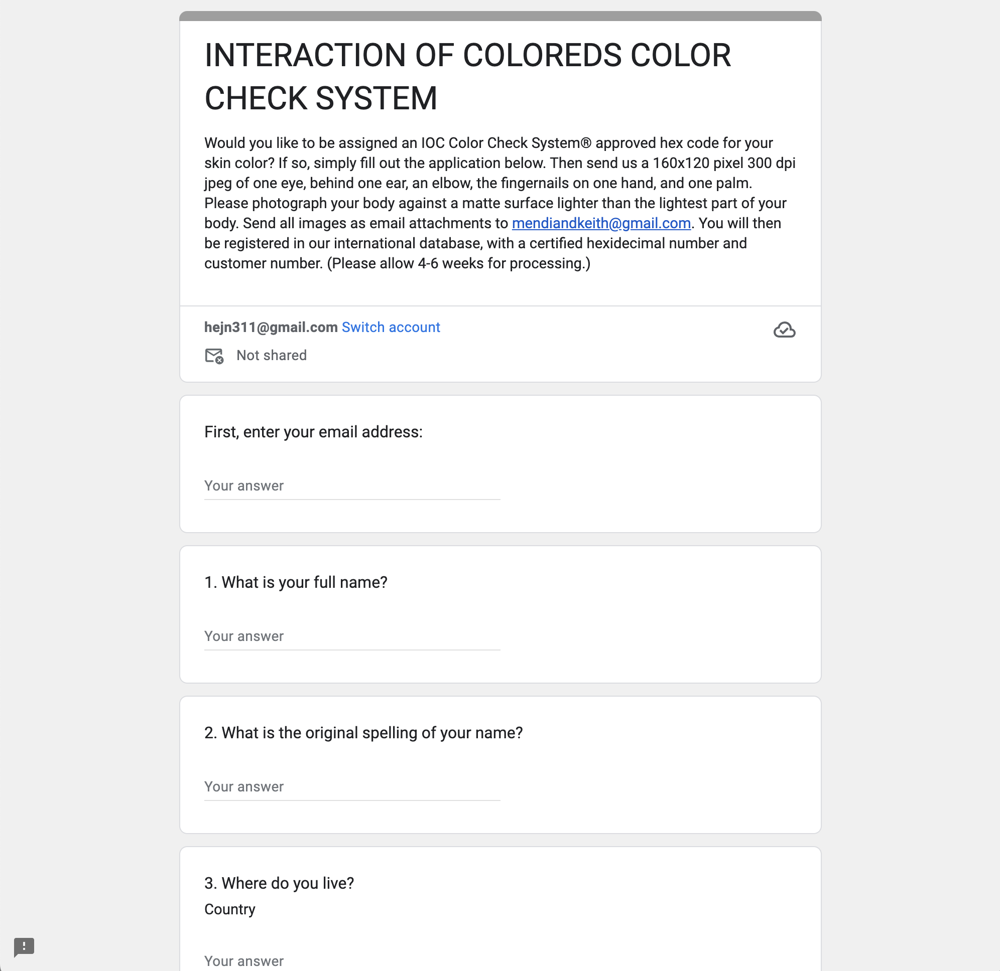

Black Net.Art Action, Mendi + Keith Obadike, 2001-2003
Mendi와 Keith Obadike의 "Black Net.Art Actions"는 2001년부터 2003년까지 제작된 뉴미디어 예술 작품 모음이다.
이 시리즈의 각 작품은 독립적인 작품으로도, 작가의 계속되는 퍼포먼스의 한 모듈 혹은 세가지 모음곡으로도 생각할 수 있다.
"Black Net.Art Actions"는 각각 다른 형태를 가지고 있지만, 색상과 인종의 담론, 그리고 인터넷에서의 인종화 문제에 대한 개념적 관심을 공유한다.
이 문제들은 종종 네트 아트 담론에서 간과되곤 했다. 전체적으로 이 행동들은 인종을 중심 문제로 삼아 네트 아트를 재구성하려는 시도로 이해될 수 있다.
“WE DID NOT FEEL THAT THE NET WAS A COLORLESS SPACE, BUT RATHER, THAT WHITENESS WAS BEING SET UP AS THE DEFAULT.”
“인터넷이 무색의 공간이 아니라 흰색이 기본으로 설정되어 있다는 느낌이 들었습니다."
—MENDI OBADIKE
작품 소개
1.흑인성 판매 "Blackness for Sale" (2001)
인터넷에서 새롭게 떠오르는 전자 상거래 시스템에 대한 풍자적 개입.

-
2001년 8월 8일, Mendi + Keith Obadike는 Keith의 Blackness (흑인성)를 eBay에서 Black Americana와 Fine Art 카테고리 하에 Item #1176601036으로 판매 목록에 올렸다.
- Blackness의 설명
"이 Blackness는 흑인 예술을 창조하는 데 사용할 수 있다"와 "판매자는 이 Blackness를 '진지한' 예술을 만들거나 판매하는 과정에서 사용하는 것을 권장하지 않는다"와 같은 열 가지 이점과 열 가지 경고가 나와 있다. Item #1176601036의 경매는 열흘 동안 지속될 예정이었으나, eBay에서 해당 항목이 부적절하다고 판단하여 4일 만에 삭제되었다.
- 2001년 Coco Fusco와의 인터뷰
Keith Obadike는 "나는 실제로 네트 아티스트들이 상업과 인종의 교차점에 대해 다루는 것을 보지 못했다"고 말하며, "이상한 유럽 식민주의적 서사가 웹에 존재하고 흑인들이 그 서사 내에서 차지하는 위치에 대해 정말로 논평하고 싶었다"고 밝혔다.
- 특징
"색채의 언어와 그것의 예술, 신체 및 정치와의 관계를 탐구"하려고 했다. Blackness for Sale은 식민지 만남과 흑인성의 상품화에 대한 비판으로 읽힐 수 있으며, 인종적 노예제의 경매 블록에서부터 온라인에서 순환되는 Black Americana와 왜곡된 흑인성 아이템의 소비에 이르기까지 이어진다. 이는 범주화와 흑인 삶의 부정에 대한 심문인 것이다.
- 시사점
-
"소위 Black Americana"라는 수집된 유물의 문화 정치에 대한 비판적 논평을 촉진
-
사이버 공간 내 커뮤니티의 상태에 대한 가정에 주목했다고 언급
-
작품을 맥락화하기 위해, McGahan은 eBay의 "사이버문화 커뮤니티의 주요 사례로서의 출현"을 검토하며, 이 경매 사이트의 커뮤니티 브랜드의 구성 요소로서 "인종의 모호한 괄호"와 관련이 있을 수 있다고 언급
-
eBay의 "자신을 인종-블라인드 포럼으로 자리매김하려는 시도"에 대한 시기적절하고 비판적인 대응으로 제시했으며, 이는 당시 많은 플랫폼이 이 실천에서 이익을 보는 인터넷 기업가 정신과 소비주의의 방식을 모색하고 있었기 때문이라 설명
-
eBay가 후에 심리정치(psychopolitics)라고 부를 개념에 참여하고 있음을 밝힘
*심리정치는 생명정치(biopolitics)와 생명권력(biopower)에서 디지털 패러다임으로의 전환을 구분한다. 생명정치와 생명권력이 물리적 공간을 통합하는 규율 체제에 기반을 두고 있는 반면, 심리정치와 심리권력(psychopower)은 디지털 감시와 가상적 실천을 사용하여 "심리적 과정 자체에 개입"하면서 대중의 사회적 행동을 지배하는 "무의식적 논리"를 조종하는 것에 관심을 둔다.
2. 빨간색의 상호작용 "The Interaction of Coloreds" (2002)
색채주의의 새로운 형태와 온라인 감시에 대한 잠재적 역할을 다루는 웹사이트.
-
Mendi와 Keith Obadike는 2002년 작품 "The Interaction of Coloreds"를 통해 온라인과 오프라인에서 "사회적 필터"를 통해 인간을 분류하는 규칙을 재정립했다.
- 웹사이트 플로우
- 메인 페이지
손, 팔꿈치, 귀 뒤 등의 신체 부위 사진들이 2 x 2 격자 형식으로 나타난다. 사용자가 격자를 클릭하면 IOC Color Check System®으로 이동하며, "원하지 않는 방문자로부터 온라인 커뮤니티를 보호"하고 "웹마스터만을 위한 웹안전 색상"을 적용하도록 권장한다.

- 정보 페이지
"이 빠르게 변화하는 전자상거래 및 온라인 커뮤니티 세계에서, 누가 공공 장소에서 갈색 종이봉지 테스트를 받거나 실시할 시간과 수모를 감당할 수 있겠습니까?"라는 문구가 적혀 있으며,

"이메일을 받을 때 John Smith, #FFFFFF (진짜 흰색)과 같은 신뢰할 수 있는 색상 정보를 얻는 것이 신선하지 않겠습니까?"라고 설명한다.

페이지는 사용자가 일련의 질문에 답하고, 엄격한 JPEG 가이드라인을 따라 업로드하도록 요구한다. 그 후, 사용자는 확인, 식별 및 자신의 가치를 측정하기 위한 전용 16진수 색상 코드를 받게 됩니다.
- "The Interaction of Coloreds"의 질문:
* “Interaction of Coloreds Color Check System® Hyper-Race® Based Solutions for the Discriminating e-Business *
-
온라인 티켓팅을 제공하는 항공사 주식을 보유하고 있습니까? 현재의 공포 분위기가 당신의 수익에 어떤 영향을 미치는지 걱정하고 있습니까?
-
웹에서 비위협적인 신체를 가진 고객에게 어떻게 더 낮은 요금을 제공할 수 있을까요?
-
채팅방에서 사랑을 찾고 있습니까? 누군가가 자신을 "키 크고, 어둡고, 잘생긴" 사람으로 묘사할 때, 그의 정확한 피부색을 알고 싶습니까?
-
금용 대출 기관을 대표하십니까? 예상되는 부동산 가치를 결정하기 위해 온라인 피부색 확인이 필요합니까?
-
정보화 시대에 귀하의 클럽의 차별화된 취향을 유지할 방법을 찾고 있는 새로운 아프리카계 미국인 웹 포털 또는 오래된 흑인 사교 클럽의 회원입니까?
-
유색인종 예술가가 만든 net.art에 투자하는 예술 수집가입니까? 예술가의 신체가 작품의 가치에 미치는 영향을 결정하는 방법이 필요합니까?"
- 특징
-
해체된 "인터넷상의 유색 인종 언어"와 관련하여 이 "언어가 인종과 같은 정체성 범주의 지속성을 어떻게 반영하는지 조사
-
각 모음집은 인터넷 탐색 주체의 분리에 대한 주장을 명백히 거부하고 언어의 사회적 코딩을 통해 전달되는 가치에 주목
-
음성 언어의 인코딩/디코딩 프로세스를 적극적으로 제거하여 웹의 기술 언어 및 프로토콜 관행에 연결
- 시사점
-
HTML, TCP, IP, DNS("인터넷의 기본 언어")와 같은 온라인 언어가 단순히 "수동적으로 색상을 생성"하는 것이 아니라 "색상을 전달"한다고 주장하며, 따라서 보여지는 것 너머의 조사해야 할 동원되고 암호화된 사회적 의미가 존재한다고 시사
-
모든 의사소통 시스템에 본질적인 결과로 존재하는 언어의 이데올로기를 박식하게 구성하는 "수학적 중립성"(Driscoll 60)을 비난
-
인터넷 유토피아주의의 개념을 거부할 뿐만 아니라, 2018년의 사회적 틀과 함께 인터넷 프로토콜의 본질적으로 인종 중심적인 데이터베이스 방식과 관련된 비판적이고 풍자적인 메뉴로 자리 잡음.
-
2018년의 "Interaction of Coloreds"를 단순히 이전 작품의 "재방문"이 아니라, 새로운 맥락에서 필연적으로 재등장하는 사회적 작업으로 생각해야 하며, 이는 우리가 계속해서 변화하는 유해한 인종화의 구속에 얽매여 있다는 것을 의미
3. 외모 유지 "Keeping Up Appearances" (2001) - Black Feminist
개인 서사의 전통을 따르는 Mendi의 “하이퍼텍스티모니얼” 작품.
참고 링크
-
“The Interaction of Coloreds” (2002, 2018) and Racialized Online Identity by Ekin Erkan
-
“Get at a way of telling” On Black Net.Art Actions by Simone Browne
THE REVOLVING INTERNET, CONSTANT DULLAART, 2010
브라우저 기반 작품 시리즈 중 하나인 'The Revolving Internet(회전하는 인터넷)'은 상징적인 구글 검색 페이지를 애니메이션으로 변환하여,
대부분의 사용자가 인터넷을 경험하는 방식의 인프라에 주목하게 만들었다. 작가는 구글 인터페이스의 기능을 유지하면서 애니메이션을 추가함으로써,
플랫폼의 점점 커지는 힘을 재치 있게 의문시하는 형식주의 실험을 했다

작품 소개
프로젝트 발단
-
작가는 2000년대 초 네덜란드 텔레비전에서 방송된 "Cheers" 에피소드를 놓친 후 처음으로 인터넷을 자신의 예술적 작업에 통합하기 시작
-
그는 온라인에서 해당 에피소드를 찾으려 했으나 실패, 대신 소셜 미디어 이전의 웹에서 흔히 볼 수 있는 일상적인 인터넷 콘텐츠를 발견
⮕ 이는 가장 민주적인 인터넷의 모습: 사용자가 자신의 생활 속 필요를 채우기 위해 메트릭에 구애받지 않고 콘텐츠를 만드는 것
-
그러나 2010년 "The Revolving Internet"이 출시될 즈음, 사용자들이 점점 중앙 집중화된 플랫폼으로 이동, 여러 브라우저들이 주목 경제의 역학에 더 민감해지는 현상 심화
⮕ 작가가 특히 좋아했던 직접적인 콘텐츠 생성 방식은 훨씬 더 드물어짐
-
이러한 상황에 대응하여 Google 검색 인터페이스를 변경하는 일련의 작품을 제작
-
첫 번째 작품은 인터페이스를 marquee(텍스트가 자동으로 위, 아래, 왼쪽 또는 오른쪽으로 스크롤되도록 하는 비표준 HTML 요소) 태그에 삽입하여 좌우로 움직이게 한 "The Disagreeing Internet"
-
이 시리즈에서 가장 불안감을 조성하고 가장 복잡한 개입은 "The Revolving Internet"
⮕ 작가는 구글 페이지를 360도 회전시키는 페이지를 만들고자 했으며, 이는 영화에서 특히 어려운 카메라 움직임에 대한 제스처
흥미로운 점
-
“이 모든 작품은 단순하고 단일한 행동을 보여준다,”
-
“이들은 모두 구글의 홈페이지를 다루며, 비정상적인 외관에도 불구하고 완전히 기능한다.
-
도메인 이름을 먼저 보든, 페이지의 내용을 먼저 보든, 둘을 합쳐 보면 그 농담을 이해하게 되고, 아마도 미소를 짓게 될 것이다.
이제 구글이 신이 아니라는 것을, 구글이 절대적이고 손댈 수 없고 명확한 존재가 아니라는 것을 의식적으로든 무의식적으로든 알게 된다. 구글은 검열하며, 검열당할 수 있다. 거꾸로 표시될 수 있다. 동의하지 않거나 의심할 수 있고 잠들 수 있다. "The Revolving Internet"은 안데르센의 유명한 이야기 "벌거벗은 임금님"과 같다: 읽고 나면 실제로는 아무것도 변하지 않지만, 권력자들에 대한 당신의 인식은 변한다. 어쩌면 당신의 왕도 벌거 벗었을지 모른다.”
인터뷰: The Internet’s Revolutions by Michael Connor, 2018-07-26
-
MC: 어떻게 인터넷 작업을 시작하게 되었나요?
CD: 미술학교에 다니던 2000년대 초반, 온라인에서 많은 참조 자료와 구조화된 이미지 리소스를 얻을 수 있다는 것을 깨달았습니다. 특정 웹사이트와 메시지 보드에서 찾은 이미지를 사용해 영상을 만들었어요. 하지만 학교의 구조는 여전히 방송용 비디오처럼 프로페셔널한 미디어에 의존하고 있었죠. 이런 기준들이 저에게는 제약으로 느껴졌습니다. 인터넷이 곧바로 출판의 장이 된다고는 생각하지 않았어요.
-
MC: "Revolving"이라는 선택은 형식적인 결정이었나요?
CD: 네, 매우 형식적이었어요. 새로운 미디어와 인프라를 초기의 미디어 연구처럼 형식적으로 탐구할 여지가 있다고 느꼈어요. 예를 들어, 아티 에 아미치티아(Arti et Amicitiae)에서 "Contemporary Semantics Beta"라는 전시를 큐레이팅했어요. 이 전시에서는 크리스 코이, 마리사 올슨, 파스칼 시스토, 올라 바실제바 등과 형식적 실험에 대한 논의를 했습니다.
-
MC: 수년 후에도 이 작품이 두드러지는 점은 이 어렵고 혼란스러운 인터페이스의 경험입니다.
CD: 맞아요, 소소한 제스처로 고도로 개발된 사용자 인터페이스 디자인을 전복시키는 것이죠. 예를 들어, 레딧(Reddit)에서 "The Revolving Internet"을 통해 서핑하는 것은 마치 누군가가 자신의 어깨 너머로 지켜보는 것 같고 영화 속 한 장면처럼 느껴진다는 댓글이 있었어요. 정보 인프라를 의식하게 만드는 경험을 목표로 했습니다.
-
MC: 그 이후 디지털 노동과 디지털 노동의 조건을 표면화하는 작업을 많이 하셨습니다.
CD: "The Revolving Internet"을 통해 디지털 인프라를 형식적으로 탐구하는 것이 주요 목적이었지만, 유튜브의 "로딩" 화면 작업처럼 디지털 노동의 조건을 다루는 작품들도 만들었습니다.
-
MC: 구글의 진화가 이 프로젝트에 어떤 영향을 미쳤나요?
CD: 구글 크리에이티브 랩(Google Creative Labs)의 몇몇 사람들과 이야기했는데, 2011년에 "Do a Barrel Roll" 기능이 생겼어요. 구글 페이지가 360도 회전하는 기능이었죠. 그리고 나서 iframe을 사용하는 기술이 금지되었어요.
주목경제역학
DEATH IMITATES LANGUAGE, HARM VAN DEN DORPEL, 2016 - ONGOING
약 10만 개의 디지털 그림이 Death Imitates Language 의 온라인 갤러리에 타일로 정리되어 있으며, 작가가 2016년에 시작한 컴퓨터 구동 구성 시스템의 누적된 결과물을 나타낸다. 성별이 없는 "Adam & Eve" 라는 단일하고 독창적인 이미지 쌍으로 시작한 시스템의 알고리즘은 관람자가 이미지를 반복적으로 "번식" 하여 가능한 새로운 구성을 만든다.
"작가는 구성된 이미지의 결과들을 검토하여, 마치 번식자가 유리한 특성을 선택하는 것처럼 일부 미적 표현을 제거하고 다른 표현을 더 부각시킨다."
또한 일부 이미지는 갤러리 전시를 위해 물리적으로 제작되기도 한다. 실제로 제작되는 물리적인 작품의 형태에서도 단일의 대상으로 분류되는 것을 거부하고, 투명한 재료들을 겹치고 유동적인 방식으로 구성하여 더 큰 역동적인 시스템과 생태계의 정지된 순간을 보는 것과 같은 효과를 만든다.

“I’M TRYING TO MAKE SYSTEMS THAT REVERSE ENGINEER MY IMPLICIT OR UNCONSCIOUS IDEAS OF WHAT I WANT TO ACHIEVE.”
"나는 내가 성취하고자 하는 것에 대한 암묵적 또는 무의식적 아이디어를 역공학화 하는 시스템을 만들려고 노력하고 있습니다."
— HARM VAN DEN DORPEL
작품 소개
인터뷰
-
프로잭트의 시작점
‘Death Imitates Language’를 준비하는 몇 년 동안, 저는 갤러리 공간과 예술 시장에서 일반적으로 통용되는 방식에 맞추려고 하는 '예술가'가 되기 위해 점점 더 노력했다. 어느 정도 성공을 거두었지만, 이 과정에서 제가 출발한 네트 아트와는 조금 거리가 있는, 약간 공허하고 단절된 느낌을 받았다. 한동안 저는 예술계에서 벗어나 제가 가장 즐기는 프로그래밍에 전념할까 고민하기도 했다. 이러한 불안정한 시기에 많은 생성 그래픽 작업을 했지만, 약간 지루함을 느꼈다. 프로그램이 생성하는 무작위성에 조금 더 발전과 방향성이 필요하다고 생각했다.
-
프로잭트의 발단
저는 이러한 짧고 강렬한 관계에서 아이가 태어난다면 어떻게 될지 생각하기 시작했다. 그 아이의 생물학은 어느 정도 알고리즘에 의해 결정될 것이다. 이러한 생명 정치학은 이해하기에 상당히 복잡했지만, 그래픽 프로젝트에 방향성을 제공했다. 미학적 인구를 번식시키는 아이디어가 기계가 데이터를 이해하고 '창조'하는 방식을 시각화하는 방법을 제공할 수 있다는 생각이 들었다. 이 작업은 이제 상당한 시간이 지나도 계속되고 있다. 아마도 이 아이디어를 준 많은 관계들보다도 오래 지속되었을 것이다.
"Death Imitates Language" 전시
-
프로젝트 개요
전시는 작가가 직접 설계한 인공지능과의 협력 작업이다. 그는 성장 과정에서 영향을 받은 초기 20세기 유럽 콜라주 작품들에서 반복되는 요소를 추출하고, 지난 5년간 자신의 콜라주 작업에서 사용했던 직관적 의사결정을 분석하여 이를 바이너리 염색체로 인코딩한 "장기"로 추상화했다.
-
알고리즘과 생성 과정
작가는 인간 DNA가 인간의 성장과 발전의 청사진으로서 기능하는 것처럼, 이중 염색체로부터 이차원 이미지를 생성하는 유전 알고리즘을 고안했다. 이러한 염색체는 표본 내의 두 작품이 짝을 이루고 교차하여 자손을 생성할 수 있게 한다. 예술가는 가장 "적합한" 표본을 선택하고 불필요한 특징을 제거하여 자신의 취향에 맞게 작품을 육성할 수 있다.
유전 생물학은 해당 작품에서 조직적 은유로 작용한다. 작가에 따르면, 이 시스템은 "조상으로부터 정보 시퀀스(일종의 DNA)를 물려받아" 이미지를 생성한다. 프로젝트 웹사이트에서 각 그림 위에 있는 이중나선 기호를 클릭하면 이 DNA의 여러 측면을 나열한 ID 카드가 나타난다. 여기에는 표본 이름, "부모"(하트 아이콘으로 연결됨), 나이, 조회수, "외동자", "형제 3명", "자녀 8명", "처녀"를 포함한 혈통 관련 태그가 포함된다.
-
선택 과정
어떤 작품이 교배가 될지, 표본으로 남아 있을지, "동결"되어 제조될지에 대한 결정은 예술가가 시스템에 주는 마이크로 피드백을 통해 이루어잔다. 이는 페이스북이 사용자 프로필을 재구성하는데 도움을 주는 좋아요 클릭과 유사하다.
-
흥미로운 점
'Death Imitates Language’의 웹 사이트는 일종의 소셜 네트워크를 보여준다. 작품들은 자율적인 에이전트이고, 형제자매가 있고, 다양한 세대가 있다. 그리고 각 작품에는 고유 이름과 부모의 이름으로 구성된 이름이 있어 전체 가계도를 추적할 수 있다. 이는 비트코인과 같이 두 컴퓨터 간의 데이터를 안전하게 전송하는 데 사용할 수 있는 Merkle DAG 트리, 즉 '해시 트리'와 유사하다. 각 작품에서 항상 부모를 찾을 수 있으며, 전체 구조를 아담과 이브까지 추적할 수 있다는 점이 흥미롭다. 작품의 이름은 인터넷에서 가장 많이 사용되는 1,500만 개의 비밀번호를 기반으로 한다.
하름 반 덴 도르펠(Harm van den Dorpel)
베를린을 기반으로 활동하는 개념 예술가.
자신의 작품을 통해 미적 위계와 사이버네틱 아트 조직 및 현대 시각 문화를 조사한다. 직관적인 연관 표현과 알고리즘적으로 구조화 된 정보 시스템이 하이브리드로 작동할 수 있는 방법을 탐구한다. 그의 작업은 조각, 콜라주, 애니메이션 및 웹사이트에 걸쳐 있다.
하름 반 덴 도르펠은 언어, 예술, 인터넷의 시스템에 관심이 있다. 그의 많은 작품은 그가 프로그래밍한 덧없는 웹사이트 형태로 존재한다. 기술 철학에 대한 관심을 바탕으로, 반 덴 도르펠은 물리적 예술 작품과 디지털 플랫폼 간의 긴장을 탐구하며 오늘날 우리가 정보를 조직하는 방식을 생각해보게 한다.
데이팅 앱
아티클
뉴욕에 거주하는 조(30세 남성, 미국) 씨는 “우리는 앱에서 많은 선택권을 얻고 많은 사람을 만나게 된다. 이러한 모든 옵션은 비인간적인 느낌을 준다. 사람들은 자신과 더 잘 맞는 사람을 찾을 수 있다고 생각하기 쉽기 때문이다. 나나 상대방 모두가 초기에 보였던 호감을 잃지 않고 시작하는 단계에서 나아가기가 정말 어렵다”고 말했다.
미국 보스턴에 거주하는 앱 사용자 안톤(33세, 남성) 씨는 더밀크에 “데이팅앱은 어떤 경우에는 선택의 폭이 무한하다고 생각하게 만들고, 어떤 경우에는 우주에 나 혼자만 존재한다고 생각하게 만든다”면서 “전자는 가능한 옵션에 압도돼 합리적인 선택을 할 수 없으며, 후자는 자신이 통제할 수 없는 일에 대해 스스로를 자책하거나 절망에 빠진다”고 말했다.
조슈아 씨는 “나는 내가 상품화 된 것처럼 느껴졌고 내 가치가 무엇인지 정확히 봤다. 대도시에서는 많은 사람과 첫 번째 데이트를 할 수 있지만 사람들은 언제나 선택지가 있기 때문에 정착하지 않는다”고 말했다.
이 같은 필터링이 가능하다는 건 특정 직업, 인종, 사회적 지위, 교육수준 등에 따라 추천목록에서 아예 보이지 않게 할 수도 있다는 말이기도 하다. 맥기버 및 브루닝 박사는 “데이트 앱은 또 외모, 인종, 사회적 지위 등 우리가 바람직하지 않다고 느끼는 특성들을 필터링 해 기존의 편견을 강화하기도 한다” 고 말했다. 때론 지나친 경쟁을 유발하기도 하며 그에 따른 피로, 각종 언어폭력 등으로도 이어진다.
미국 뉴욕에 거주하는 Z세대 앱 사용자인 피터(27세, 남성) 씨는 “뉴욕에서 4년 동안 싱글로 살면서 데이트 앱을 사용하고 있다”면서 “데이팅앱이 데이트를 주로 하는 수단인 건 맞지만 항상 쉬운 것은 아니다. 아주 매력적인 남성이 아니라면 많은 경쟁을 해야 하기 때문”이라고 토로했다.
참고 링크
-
DEATH IMITATES LANGUAGE_Harm van den Dorpel (NL 2016)
-
Death imitates Language – in gesprek met Harm van den Dorpel
-
Harm van den Dorpel. Death Imitates Language_26 Nov 2016 – 4 Feb 2017)
-
Death Imitates Language_Series, 2016 – ongoing